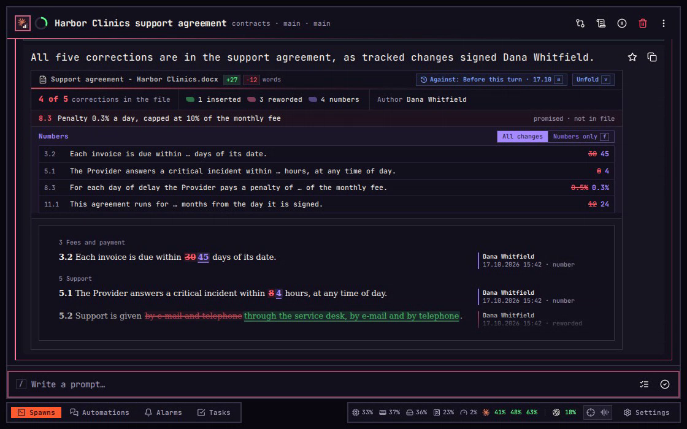

Document card
See what an agent did to a document as the document, not as a diff.
An agent edits a contract and says all five corrections are in. A list of changed lines cannot be read at all for a Word file, and for a markdown one a deadline moved from 30 to 45 days hides among reworded sentences. The document card reads the file itself: it counts the promised corrections, lists the changed numbers first, and draws the page with every change in place.
On a phone, tap the button named beside each key.
01Count
Count the corrections in the file.
A turn is one message to the agent and everything it did in answer. The agent adds a document card at the end of each turn's reply that edited a Word, markdown or text file, one card per file; when one is missing, ask the agent for that file's document card. On it the agent lists each correction it says it made, and the card checks each one. Folded, the card shows the first three changed paragraphs. Its count reads 4 of 5 in red, and under it the one correction promised and not in the file: 8.3, the penalty capped at 10% of the monthly fee. The server reads the file itself, as Word shows it with every tracked change accepted, and looks for the words each correction should leave anywhere in it, so the count is never the agent's word for it. Ask the agent for the missing 8.3, and the next reply's card counts again. A full count, 5 of 5, is green. When the agent promised nothing countable, the card says how many changes it holds instead. A red line under the head says when the file, or the version picked to compare against, cannot be read. On a phone the count stands beside the words added and taken out; a laptop adds what kind each change is and who made it.

02Page
Read the document as a page.
Unfold, or v on a laptop, draws the whole document as a page: inserted words green and underlined, deleted words struck where they stood, changed numbers in their own colour, clause numbers bold. Unchanged paragraphs fold into one line that counts them. Beside each paragraph on a laptop, or under it on a phone, a note says who made the change, when, and what kind: inserted, deleted, reworded or number. One person's deletion and insertion within five minutes count as one change, read as number when a figure moved and reworded otherwise. A paragraph with several changes says how many. The arrows, or n and p, step through the changes, Change 1 of 8 and on, each ringed. Fold, or v again, folds the card.
v Unfoldn The nextp The one beforev Fold
03Numbers
See the numbers first.
Folded or open, the card lists every changed figure under Numbers, above the page, the old one struck beside the new: 30 to 45 days, 8 to 4 hours, 0.5% to 0.3%, 12 to 24 months. The Numbers only button, Only on a phone, cuts the page down to the paragraphs holding a changed number, and All changes, All on a phone, brings every change back. On a laptop, f does the same once v has unfolded the card. The arrow, or n, steps from number to number, each ringed on the page.
v Unfoldf Numbers onlyn The next
04Against
Choose the version to compare against.
The marks are drawn against one version, named on the card: Against: Before this turn in the card's head on a laptop, and the name alone at its foot on a phone. That button, or a on a laptop once v has unfolded the card, lists every version. Before this turn is the file as the turn found it. Without tracked changes is the file with every tracked change rejected: what it said before anyone's tracked edits. Then come the copies the agent named on its card, and each version saved in the folder's history in git, where only the newest few show their word counts before they are picked. Tell the agent which copy to compare against, such as the one sent to the client, and it names that copy on its card. A copy kept outside the spawn's folders stays on the list greyed out, with the reason. For a Word file, Before this turn needs a copy the agent saves before editing; without one it is not on the list, and the card compares against the next version there. A markdown file the agent changed with a script rather than its editing tools has none either, and a red line says so. Ask the agent to save a copy before its next edit, or pick a version from git. The arrows, or n and p, walk the list, and Enter or a tap picks. Against Sent to client the card holds 10 changes, and two carry Priya Nair's name: the client's lawyer changed the agreement too. The pick is kept on the device for that file.
a The versionsn The nextEnter Pick
05Earlier turn
Open an earlier turn's card.
imba keeps the file as each turn left it, and the card reads that copy, so an earlier turn's card keeps showing that turn's work however the file changes later; when no copy could be kept, the card says why. The Log lists the spawn's turns. On a laptop, l opens it, a turn's number opens that turn, and Enter shows it whole as Full turn. On a phone, Log in the spawn's menu opens it, a tap opens a turn, and Full turn shows it whole. The first turn edited proposal.md, a markdown file, and its card works the same: Unfold, or u on a laptop, opens it. A markdown file keeps no tracked changes, so its notes count changes without a name or a time, and its versions have no Without tracked changes.
l The LogEnter Full turnu Unfold
A reply that edited several documents carries one card for each, and v reaches the newest; a Word file's headers, footers and footnotes are read too, each under a heading of its own. A spreadsheet or a PDF gets no document card.
Every key and button
Each press, and its key.
The chapters above use most of them. Here is all of the document card: what you press, the key that does the same, and what happens. Keys need a keyboard; on a phone or tablet the buttons are taps.
On the spawn
- UnfoldvUnfolds the newest document card, or folds it.
On an open card
- FoldvFolds the card back to its count and numbers.
- Numbers only, or Only on a phonefShows only the paragraphs with a changed number; All changes, or f again, shows every change.
- The arrowsn pSteps to the next change, or the one before, and rings it.
- AgainstaOpens the versions the marks can be drawn against, or closes them.
- qCloses the versions, then folds the card; on a phone, Against and Fold do the same.
In the versions
- The arrowsn pWalks the list.
- Pick, or a versionEnterDraws the marks against that version, and keeps the pick for that file.
In the Log
- LoglOpens the spawn's turns as chapters.
- A turn1–9Opens it: what was asked, and what it did.
- Full turnEnterEverything the turn did, its document cards with it.
- UnfolduUnfolds the full turn's document card, or folds it.
Limits
- FilesWord files, markdown and text, each version up to 64 MB.
- On one cardUp to 12 named copies and 100 promised corrections.
Recorded in imba. Every spawn, repository and person in these films is made up.